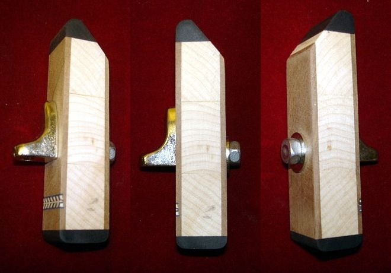
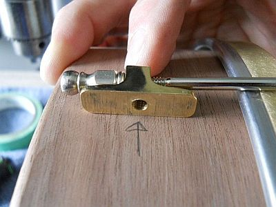
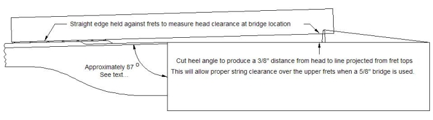
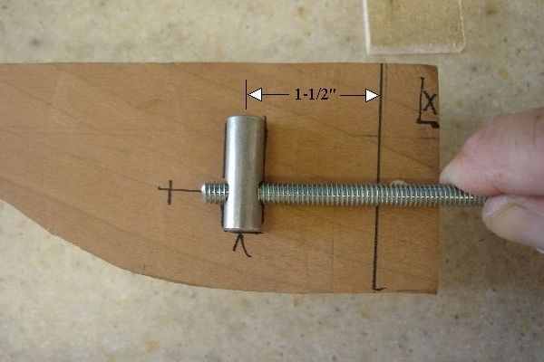
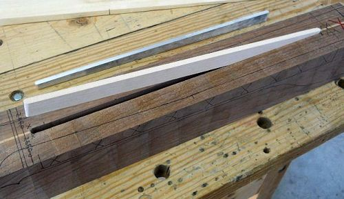

Select your area of interest:
Home* Lap Steel* 3 String Guitar* "Regular" Guitar* Violin* Bass*Banjo* Mandolin* Ukulele* Home Recording* Links
Open Back Banjo:
Traditional & progressive design & construction information
Boucher Early Minstrel Banjo (construction guide on CD & full size plan available)Frank Profitt Mountain Banjo
Bluestem Mountain Banjo Nouveau
Bluestem Artisan Mountain Banjo
Bluestem Open Back Banjo Nouveau
Bluestem Wine Box / Hand Drum Banjo
Open Back Banjo Design Primer
General Banjo Construction Information
Open Back Banjo Setup Guide
“Why can’t I get this thing to play in tune?” (more than you wanted to know about equal temperament)
Bluestem Open Back Banjo (construction guide on CD & full size plan available)
Bluestem Workingpersons 11 Slot Head Open Back Banjo (construction guide on CD & full size plan available)
Bluestem Wood Top Banjo Information (full size plan available)
*****************************************
Quasi-traditional Open Back Banjo Design:
The process of creating your muse
If you're thinking about constructing your own open back banjo but would like to incorporate a few of your own ideas there are a few steps that you'll need to take to ensure a successful outcome. I'll attempt to shed a bit of light on exactly how a list of envisioned design elements are morphed into a functional instrument design and offer up a bit of advice on what I consider to be good design choices as well as making an attempt to provide the reasoning behind those recommendations.Although I've spent considerable time developing non-traditional and alternative designs, we'll concentrate here on design that would be considered "normal" or at least not TOO far outside the range of what is currently accepted. The nice thing about open back players is the relatively wide range of what is considered as acceptable within the community. That might not be the case if we were talking about a traditional Bluegrass banjo, but thankfully that's not my audience. Although my material here will be targeted more towards the "clawhammer" community, it has wide appeal; the same person who might make a banjo from a gourd, gas can , or Buick transmission would find the information presented here to be useful.
A close friend once advised me to learn from his mistakes so I wouldn't have to make them all myself; those were wise words that I've attempted to put to good use over the course of my lifetime and it is within that ideal that my thoughts are offered here. The material presented in this section isn't meant to be a complete "How To Build A Banjo" presentation, but serves as a vehicle to present a bit of banjo design information that can be difficult to find elsewhere.
As always, these ideas relate to what I've found to be true over the last 20 years of affiliation with banjo construction. You may have different views on some of my offerings, and I encourage you to freely express them on your own website. Remember, the bottom line is to enjoy your journey!
I'll assume if you're dealving into actual design that you're well past the stage of needing to familiarize yourself with the naming conventions for the various parts that make up a banjo, but if you run into anything that might be a little hazy you can refer to the diagram below:

Let's get started...
It's necessary to place the horse before the cart, so the first thing you'll need to do is gather a list of design criteria that you wish to incorporate. "Ultimate" designs are numerous, so begin your quest by realizing that as soon as you assemble and play what you've theorized as being ideal you'll more than likely immediately start a list of "improvements" in your ultimate design. It's natural, and it's a good thing.Here is a list of some of the design features that you might want to take into consideration, followed by a bit of explanation. Clicking on an item will take you to that area; your Browser's BACK button will return you back here.
Topic Index
1.Scale Length2.Pot Size
3.Rim Construction
4.Pot Construction
5.Head Material Choice
6.Head Size
7.Head Attachment Methods
8.What is "Conventional Hardware?
9.How many head tensioning points do we need?
10.So what is the ideal number of hooks to use?
11.Determining a practical maximum number of hooks
12.Tone Ring
13.Tension Band
14.Hooks, Nuts, and Shoes
15.Determining shoe mounting hole location
16.Assembling the pot
Pot complete; time to move on to all of the neck stuff.
17.Hypothetical bridge location18.Determining the nut to heel length of the neck
19.Fretboard Design & Layout
20.How many frets?
21.Fret Placement Accuracy
22.Neck Centerlines (Yes, plural...)
23.Understanding Neck Skew
24.Neck Heel Angle (...and how to get it right)
25.Neck to pot mounting
26.Neck Reinforcement and Relief
27.A final thought...
1. Scale Length
We'll start our list of specifications with a desired scale length. We first need a good definition of scale length, particularly as it relates to an instrument with a bridge that isn't anchored down solidly to one spot, banjo being a prime example of that.Definition:
Scale length = the distance represented by the longest vibrating length of string between nut and bridge.
Since the banjo does not have a fixed bridge position we need to refine how that distance is represented. We'll arrive at scale length by measuring the distance from the nut to the 12th fret and multiplying by two.
Scale length is ALWAYS represented by the definition above. A fretless instrument uses the exact same definition, although we have to change the 12th note position to "hypothetical 12th fret position", since there is no physical fret. All other design considerations remain the same, even though the actual scale length of a fretless instrument can be freely adjusted. We are concentrating on the fretted design here, though.
The ACTUAL distance measured from the nut to the bridge position on a properly setup banjo will be slightly longer than the scale length due to the need for compensation, and we'll get to that a bit later.
Although there is no "standard" scale length for banjos, the common five string generally falls within a range of anything from 23" to 26-3/8" with many of the current crop of open back builders gravitating toward the 25-1/2" scale length as an accepted norm.
There are other forms of banjo such as the piccolo, tenor, baritone, or "long neck" that require entirely different scale lengths, but we'll focus on the more ubiquitous "standard" five string banjo for the purposes of our discussion relating to banjo design.
Making an informed decision on scale length requires us to reflect on what determines one's own personal preferences in an instrument. Here are a few points to take into consideration:
1. Longer scale lengths are often more appropriate for lower tunings. The additional string tension for longer scales can contribute significantly to avoiding "flabby string syndrome".
2. Shorter scales make reaching the lower notes easier since the neck is generally shorter, although a direct correlation isn't possible because the banjo may be designed to have the bridge positioned differently on the head.
3. Shorter scales make note intervals closer together. That can mean additional comfort when chording or for long stretches between notes spanning multiple frets.
4. Shorter scales are often preferred for banjos commonly tuned to higher pitches to accompany fiddle in the keys of A and D; in common vernacular you'll often hear these banjos referred to as "A scale banjos". These banjos are purpose-built to mimic the standard banjo capoed at the second fret. An A scale banjo is a bit more compact with a shorter neck length and is a bit lighter in weight with a slightly different overall feel due to the shift in the balance point in playing position. Scale lengths for A scale banjos are typically in the 23" to 24" range.
I have a personal preference for the slightly shorter scale lengths, most often going with 24" for "A" scales and 25-1/2" for "standard" length banjos.
Return to Topic Index
2. Pot Size
Pot size might be a good specification to determine next, and can be based on two primary considerations :Comfort
The comfort aspect of the banjo as it relates to the intended player should be a prime consideration when determining physical pot size. The 11" pot is the most commonly preferred size because it provides an excellent balance between providing enough physical support for the sound while not seeming to be large or unwieldy under the arm. The 11" pot is also generally a bit shallower than a 12" pot, which contributes to a smaller and more compact feel under the forearm.
Physical construction of the pot
Although the size of the pot will have great effect on overall tone the resulting sound will also effected by the actual pot construction methods, as well as many of the individual components used to construct the entire pot assembly. It will be necessary to examine more closely the actual pot construction and consider separately the other components We'll examine pot construction methods first and then move on to the other components and discuss their individual contributions to the resulting tone.
Return to Topic Index
3. Rim Construction
The method by which the wood rim of a conventional open back banjo is constructed also obviously contributes significantly to the instrument's tone, but it is difficult to quantitatively analyze exactly the effect any particular rim will have on tone because a rim can be made in a variety of dimensions and materials utilizing many diverse construction techniques. A rim can be made from a single thin board bent into a simple hoop configuration, multiple thin laminations formed into a circular shell, stacked layers somewhat resembling a brick wall, or any combination of those techniques that can be imagined.Some rims are much more rigid in design than others, and you'll usually find the most rigid forms (block construction and up to 3/4" thick) used with tone rings known for their mass, like the cast brass or bronze tone rings associated with the traditional Bluegrass banjo. Many of the cast rings can cost hundreds of dollars, so its no small investment.
Thinner rims made in a manner that renders them more resonant and flexible are often combined with simple rolled brass tone rings, but that observation must be tempered with the desire for builders to more closely align the cost of the rim vs. the cost of the tone ring. You won't find fine gold plating used on many flatware sets purchased from the dollar store. It's just simple economics. It's my opinion that the thinner and more resonant rims also tend to sound better for most of the styles associated with the open back banjo.
In between these two extremes you can find just about any imaginable combination of woods and construction methods, so there are no hard and fast rules. One of my favorite combinations is to use a relatively thin 3/8" block constructed rim with 1/16" figured wood veneers on the outer and inner surface and capped on the bottom edge with a solid contrasting wood. This produces a rim that is fairly rigid, but is also a bit resonant. It also allows a lot of flexibility in esthetics, as highly figured woods can be used without as much concern with dimensional stability and the veneers permit many diverse design choices. I prefer to couple that type of rim with a medium weight rolled brass tone hoop 3/8" tall by 3/16" thick. The resulting combination has a fairly distinct and bright edge to the tone due to the tone hoop with a good midrange and acceptable bass from the combination of block and layer rim construction.
Rims featuring block construction, laminated wood layers, and combinations of these two construction methods can also feature an integral wood tone ring. The wood is usually selected for its ability to influence the tone produced by the rim. The wood rim with integral wood tone ring is often referred to as a "woody". An example of this type of rim showing an integral ebony tone ring is shown below to illustrate a rim incorporating many of the techniques outlined above.

Return to Topic Index
4. Pot Construction
We'll next examine all of the other individual items that make up the pot assembly and examine how those individual components affect sound properties. The effect that all of these components have on the overall sound are all inter-related, so it's best to examine the individual effects while remembering that they often react differently when used in various combinations.Return to Topic Index
5. Head Material Choice
The choice of head material has a prime effect on the overall sound. There are several synthetic varieties as well as natural hide types to choose between. When considering hide or synthetic you can tailor your sound towards the brighter end of the spectrum by using thinner choices of either type. Thicker hides will favor a rounder tone while thinner hides (usually calf or goat skin) will tend to be brighter in tone. The same qualities can also be reflected in synthetic heads with thinner uncoated or lightly frosted Mylar heads exhibiting a crisper tone and synthetics having thicker coatings becoming increasingly more subdued as coating thickness increases. Remo brand heads are highly regarded, and were developed to have the look of hide coupled with the carefree reliability of a standard Mylar head. The earlier Fiberskin design has been somewhat eclipsed by the popularity of the brighter tone of the Renaissance type of head, but you'll find adherents to just about all of the available head materials and types out there.Return to Topic Index
6. Head Size
Although the head size will obviously be determined by the overall pot size it is worth noting that the head size plays such an important role in the overall tone that its size can also be a consideration when determining what pot size you'll select.It may seem like there wouldn't be much difference between marginally larger or smaller head sizes, but an inch can be a very significant change. The total surface area of the head increases by almost 20% when going from a 11" to a 12" head. The larger surface area will allow lower frequencies to develop and radiate easier than a smaller head, so that should be taken into consideration.
I consider smaller head sizes to be more stable, both for synthetic heads and particularly for hide heads. It should be obvious that a much larger surface area will allow a greater opportunity for a head to change from humidity fluctuation and as a result of bridge pressure. Larger head sizes will be more sensitive to head deflection from bridge pressure, so it may be a bit more problematic if you like a really low action over the upper portion of the neck. A proper tensioning system will allow fairly easy adjustment for these issues, but more time adjusting means less time playing. It's another trade off.
Return to Topic Index
7. Head Attachment Methods
Heads can be attached in a variety of ways, but only a few would be viable options for most folks who are new to working out the logistics of designing and building their own vision of an instrument, so we'll concentrate on that.Will the attachment method make a difference in the sound? Of Course, but be cautious of making broad generalizations about how any particular construction detail is going to ultimately determine tone. A good case in point is anyone who states that drilling holes through the rim negatively affects tone. They will often use the example of a rim that has a separate band that the shoes attach to. While it's true that holes are no longer drilled through the rim, it's also impossible to say how much the resultant change in tone is derived from the modifications necessary to accommodate the bracket band or even the increased mass that the bracket band adds to the rim. The only way that the final outcome can be determined is to make a banjo using those particular methods and judge the outcome for yourself. Anything else is really just pseudoscience and snake oil.
Natural Hide, stretched over the rim and tacked in position:
One of the basic methods of attachment for a natural hide is to simply stretch a dampened hide over a rim and tack it in place. Banjos assembled in this manner are generally referred to as tack heads, and a quick Google search will turn up several websites describing the full procedure for hide installation on a tack head banjo. The main problem with tack head designs is the inability to have any tension control over the head. If you're thinking that banjo playing might be a good rainy day activity then a tack head might prove to be a problematic option for you. You can certainly attach a head in this manner, but be aware that it isn't without its problems.
Natural Hide, tensioned with conventional hardware:
A hide head can be a good option when combined with a tensioning system. Normally the hide is placed over the rim, a "flesh hoop" is placed over the side of the hide which is draped over the side of the rim, and the excess length of hide hanging past the flesh hoop is brought back up over the flesh hoop. A tension hoop is then placed over the hide so it traps the free edge of the hide between the rim and the tension hoop. The tension hoop is pulled down on top of this assembly to tension the head by the use of hooks which are retained by shoes attached to the rim sides. That's a rough description of the process, and again, a quick Google search will turn up several websites describing the full procedure for hide installation on a banjo.
Synthetic Head, tensioned with conventional hardware:
This would be by far the most popular option, due both to material choice, with a synthetic head's ability to remain stable in response to fluctuating temperature and humidity levels combined with the ability to easily adjust the head tension. The head bead is analogous to the flesh hoop in this case, and it is tensioned exactly like the natural hide head.
Return to Topic Index
8. What is "Conventional Hardware?"
When we cite "conventional hardware" for attachment of the head we refer usually to a system of hardware that is designed to draw the head downwards over the rim (or rim and tone ring) to allow the head to vibrate in response to excitation from the string vibration. We'll go into the excitation aspect later; at this time we'll concentrate on the mechanical tensioning system.We observed in the previous examples that a head without a tensioning system could have severe limitations for a variety of reasons, so we'll proceed under the assumption that we need a tensioning system.
I've spent a considerable amount of time working with both conventional and alternative head tensioning systems, and there are advantages and disadvantages to most all of them. You can investigate many I've experimented with here on this website so I won't delve too deeply into alternative tensioning systems here.
For the purpose of discussion we'll use the same tensioning system as outlined in the diagram at the top of this page consisting of a tension band, a number of hooks that attach to the tension band and apply downward force to the head bead, an equal number of "shoes" anchored to the rim which the hooks pass through, and an equal number of nuts which apply the force to the hooks as they are tightened against these anchored shoes. That's simple enough...anything else we need to think about?
Yup. We'll need to determine exactly how many of these hooks, shoes, and nuts we will need.
Return to Topic Index
9. How many head tensioning points do we need?
If you examine historical examples of banjos you'll find that the number of hooks has varied over the number of years the banjo has been commercially produced. My personal opinion is that the number has varied over this time period based on (first) need, (second) marketing, (and third) a welcome reassessment by "modern" makers who are brave enough to buck the status quo and really evaluate the function of conventional hardware and use their findings to accentuate the beauty of the instrument by not confining it to a rigid set of standards developed by a particular maker's (ahem...) ideas of what they deemed best for the banjo-purchasing public.Remember the story of Henry "You can have any color you want, as long as it's black" Ford? He stubbornly refused to consider colors for an automobile, or many other "modern" appointments for his Model T until the marketplace dictated that he would be driven from business if he didn't modify his manufacturing dogma. Sound familiar?
The bottom line of all of this is small shop makers were pretty much locked into 24 notch "standard" tension bands primarily as a result of what was available and also due to the constraints of what types of banjos were in demand. The popularization of other styles of banjo playing in addition to Bluegrass has led to a rekindling in the interest of the open back banjo with a proportionate increase in the availability of quality hardware in a variety of configurations. In addition to the usual sources for instrument parts, today's small builder has access to wonderful hardware such as produced by Bill Rickard and a few other small shops. It just shows what passion and dedication can do when a few creative individuals set their minds to it.
With the explosion of information via the internet and free exchange of ideas on forums such as BanjoHangout.org the hobby or small shop builder is free to design and make their own hardware such as custom shoes and tension bands. With no constraints placed on them by suppliers, the number of attachment points can be freely chosen.
Return to Topic Index
10. So what is the ideal number of hooks to use?
Let's consider first the fewest number of hooks that we could use within a range of pot sizes.In pot sizes of 8" to 12" I consider the minimum number to be 8 with the caveat that you generally need to increase the number of tensioning points as pot size and/or desired head tension is increased. Early banjos often utilized brass hooks that were subject to failure at higher tensions, so there was a practical reason to gradually increase the number as more hooks allowed the maker to "share" the overall tension between the total numbers of hooks present. That's not an issue now as modern hooks are made of much stronger steel and they can easily create enough tension to rupture a head if 12 are used, so more than that isn’t really necessary from a mechanical design perspective.
After considering the minimum number that could tension a head sufficiently and then adding in a 50% margin for safety, 12 hooks becomes a good acceptable MINIMUM number for the average 11" or 12" pot, scaling that number back a bit for a smaller design.
What about a maximum number?
An interesting question, with the truthful answer being you can use as many as you can cram between the tail piece and the neck. Our job is to find some happy medium between the minimum of 12 and so many that it's hard to keep the shoes from hitting their neighbors.
To fully understand the depth of the issue a bit of history is in order:
It's probably most accurate to say that marketplace influences had the greatest effect on hook numbers as the banjo's popularity blossomed from the mid-1800's through the "Sear's Catalog" era, since we know that larger numbers weren’t advantageous from a tensioning perspective.
As early banjo designs saw an improvement in the general strength of the hardware the number of hooks that were necessary to apply sufficient force to tension the head decreased dramatically. While large numbers of hooks weren’t necessary, the banjo buying public was just as easily swayed as consumers are today and it was soon realized that more hooks equated to a larger number of banjo sold. You can observe banjos made during the hook wars with 50 or more present; it’s a marketing tactic that has been used over and over since the advent of the salesman.
First, a brief story example of consumer marketing...
There is nothing better than the early transistor radio as an example of the "numbers game" in marketing. The average radio buyer was unaware that after a certain number of transistors in a given radio design there was no additional improvement in the sound or function of the radio if more were added. Tell that to the guy that just purchased the latest-and-greatest 27 transistor model and you’d have an argument on your hands, though. Early transistors had a relatively high failure rate when manufactured and the manufacturers soon figured out that they could include rejected inoperable transistors soldered on the circuit boards to fulfill the "letter of the law", and actually turn the non-functional components into a marketing asset. After all, they never claimed that all "27" (or more...) transistors actually worked; merely that they were part of the product. It was a great marketing scheme that I first heard of in one of the hobbyist electronics magazines when I was a pre-teen. The article stated that many of these dummy components were marked with a dot on their tops, so I quickly pulled one of my high-transistor-count radios apart to check. Sure enough, several transistors on the board were marked with dots and their leads were soldered to a common pad on the circuit board ensuring that they were indeed non-functional. I've been a skeptic of snake oil every since. The laws against it have improved, but manufacturers still use "deceptive marketing" today. Still want a 60 hook banjo?
You’ll also hear the argument from some that more hooks increased the rim mass, but manufacturers could have easily added mass without the need for added mechanical hardware.
Is there a down side to using lots of hooks? You bet.
You don't get something for nothing and all that bling will add unnecessary weight, possibly weaken an otherwise solid rim design by drilling all those holes in it, and since there's so LITTLE force exerted by each individual nut you'll be spending most of your time chasing down which one is loose and rattling, or worse yet, end up with knee problems from all the time you'll spend on them looking for hardware that has fallen off from insufficient torque. STILL want those 60 hooks?
Return to Topic Index
11. Determining a practical maximum number of hooks
What sense does it make to obsess over having EXACTLY EQUAL tension at each hook point by using drum dials, torque wrenches, or magic tuners to determine resonant head tuning frequency if your hooks aren't spaced equally around the rim? Ever heard of straining at a gnat and swallowing a camel? It's the same thing as an obsessive fascination with equal hook tension if the neck and tail piece spacing is wider than all of the spacing between hooks.My angle on this? Make the spacing between hooks the same for any given rim size and forget all the other mumbo-jumbo. It's quite easy to figure the spacing of 12, 14, 16, or 18 hooks that will allow enough space to accommodate the width of the neck heel. If equal spacing isn't wide enough for your particular neck width matched to your desired pot size just go to the next lowest number of hooks. The bottom line for me is I prefer 14 for a 11" pot and 16 for a 12" pot.
That wasn't so bad, was it?
So far we've chosen a rim design, selected a head, and settled on the number of hooks we would like to use. We can now turn our thoughts toward the tone ring.
Return to Topic Index
12. Tone Ring
We touched briefly on tone ring types when rim design was discussed, but we'll review and expound on them a bit here.Tone rings are really the gateway or interface between the banjos' vibrating membrane head and the solid "body portion" or rim of the instrument. The tone ring is a bit of a problem in that it has two distinct, and often opposing purposes. Its first purpose is to form a rigid transition area that is best described as a "break" point for the vibrating head membrane in much the same sense as the edge of the nut or bridge edge forms a distinct anchor point for the end of a vibrating open string. It can be thought of in the same way, but with head vibrations being the result of string coupling through the bridge. The better this outer edge delineates the anchor point and the better it resists any inertial changes (a function of the tone ring's mass and how solidly it is coupled to the rim) the brighter and louder the tone produced from the head itself.
A clearly defined lip for the head to break over, lots of mass, and a solid mechanical connection to the rim... That sounds like (and indeed is) the formula for a good bluegrass-type banjo, but it's also many times at odds with what an open back player is looking for. It you're starting to understand how primarily different these two types of banjos from each other then you're on the right track.
While the specification list for many bluegrass style players is often short (one specification is pretty short...), open back players have a very wide range of what is considered to be a desirable tone, and therein the problem lies. Players appreciate everything from just south of the bluegrass model and extending the opposite way to tones best descibed as "round", with some even using the term "soft". That's just not going to be something you'll hear bandied about in bluegrass circles.
Tone ring types
Tone ring types start at (believe it or not) the "no tone ring" tone ring where the rounded top edge of the rim serves as the mounting surface for the head and progress through an assortment of tone ring types all the way up to and including the heavy cast metal tone ring more often associated with a full on bluegrass-style resonated banjo.
In between those two extremes you'll find distinct formed rings made from woods usually of a different type than what the rim is made from (woody), simple rolled round brass or steel rings, simple rolled brass hoops, Spun brass internally flared rings such as the Dobson-style, ring positioned on top of a hoop held together with a spun-over skirted sleeve (Whyte Laydie), complex formed multipart tone rings (Tubaphone), and a bunch of other less-common tone rings.
Which is best?
Chevy or Ford, ask a thousand drivers and get five hundred answers. The rest are undecided... The same with banjos and that's what we like about 'em. The tone ring is one of those areas where you just have to develop a preference for a sound over a long period of playing. You may even find that you flip-flop back and forth as your tastes change over time. A bit of this has to do with the influences that currently popular players have on the listening (and playing) public, too. A few years back the Tubaphone was the Holy Grail, while today you'll see many on the currently popular Dobson band wagon. Both of those rings were rare commodities in the recent past, but thanks to makers like Bill Rickard they are within reach of the small builder without the need to scour the auction sites to find a vintage instrument in poor enough shape to rob for parts.
My favorite combination at the present time is a 3/16" by 3/8" rolled brass hoop set into a 3/16" by 3/16" corresponding lip cut into the rim which produces a consistently good tone when coupled with a 3" rim depth with 1/2" to 5/8" wall thickness. The result is bright without being overly edgy with good bass and a nice "roundness" while maintaining a bit of complexity in the overall tone. This type of ring is easy to produce and does not need to be joined if care is used when it is formed. The ends will butt together and will be held tight when the head is pulled down over it.
Return to Topic Index
13. Tension Band
The tension band is aptly and descriptively named, as it does just what it says it does, apply tension to the head.In past years the small shop makers were pretty much locked into 24 notch "standard" tension bands primarily as a result of what was available and what the purchasing public would accept. Thanks to the continuing popularity of the banjo it is now common to see instruments with alternative designs. The wide acceptance of alternative open back forms is in no small part due to the dissemination of knowledge within the banjo building community and more specifically the presence of banjo information on the web. Without a doubt the popular forum found at BanjoHangout.org has the largest accumulated knowledge base to be found anywhere on the web. There are other websites that concentrate on specific genres of banjo, but The Banjo Hangout offers a diverse all-encompassing view of the banjo.
It is actually quite easy to make your own tension band using the ubiquitous "Harbor Freight" ring roller and common brass bar stock. The ring roller is also does double duty making tone rings, too. My present favorite tension band configuration is made from 1/2" by 1/8" brass, as I actually prefer a tension band that does not protrude too highly above the head, and the 1/8" thickness looks more refined as opposed to a heavier thickness like 3/16" that is a bit too "industrial" looking for my tastes. Wider and thicker brass bar stock will add significantly to the instrument's weight and will also be more difficult to bend. I'm all about easy when it comes to rolling brass and heavier bar stock can require a rather significant output of strength with the Harbor Freight-type roller. Roll a few made from wider and thicker material and you'll decide that 1/8" by 1/2" bar stock is looking pretty good...
If you make your own tension band it will be necessary to join the ends, and while brazing is the accepted norm, I prefer to fasten the ends with a simple overlapping plate screwed over the butted ends with 4 small stainless steel button head screws. The result is strong, quite attractive, and can be positioned under the tail piece. It's such a nice joint that it could be exploited by positioning it at a more visible location and incorporating it as a design feature. It could also be positioned under the arm rest if one is used.
As far as the actual point at which each hook is located, I find the best option to be a simple notch that matches the inner hook face. Most of the commercially produced hooks actually have a flat surface where they are formed, so a simple notch forms the best mating area for the hook. It's a simple matter to use an angled hack saw cut to remove the bulk of the waste and refine the notch with an appropriately sized file.

Return to Topic Index
14. Hooks, Nuts, and Shoes
Hook, nut, and shoe selection is really a matter of individual taste, but I have a few basic preferences that have become a staple for banjos I most commonly make. I use the plated steel hooks that are commonly available because they wear well, are extremely strong, and I like the contrast against the patina finished raw brass tension band and shoes that are my preference. Nuts are selected for the same reasons, but I do prefer the look of the open ended Vega-style nuts. These are available through the usual suppliers, but are occasionally out of stock for some reason. I hope they are always available, and my preferred source for both hooks and the nuts is Elderly Instruments (when they have them!).Shoes are a bit more of an issue for me in that I'm particular about what I like and the style available from the usual suppliers are butt ugly in my opinion. That's not an obstacle for me, as I actually prefer to make my own from raw brass stock. The general instructions for making shoes are available elsewhere on this website, so I won't go into detail here. An example of a simple shoe design is shown below:

Return to Topic Index
15. Determining shoe mounting hole location
Once all the hardware choices have been made you need to consider the EXACT vertical mounting distance for your shoes. This photo illustrates how the hardware is temporarily assembled and hung over the tension band to ascertain the exact mounting hole location. You have a bit of leeway here, but make sure you have the nut screwed on about 1/4" initially, then the nut can be run up or down as necessary until you find the position that allows:1. Sufficient distance above the shoe to allow the head to be tightened while still maintaining clearance between the head bead and the top of the shoe
2. Install the shoe sufficiently high enough on the rim so the nuts won't dig into your legs
Mark the mounting screw location at the appropriate distance so the mounting holes can be drilled at the correct vertical distance.

Return to Topic Index
16. Assembling the pot
Once you have designed and constructed (or purchased) a rim it's time to assemble all of the various components into a functional pot.Pot assembly is a relatively straightforward process of drilling the rim for the shoe attachment bolts, fastening all of the shoes to the rim, adding the tone ring to the rim top, placing the head over the tone ring, slipping the tension band over the head, adding the hooks and nuts, and hand tightening the nuts while ensuring that the head is being drawn down uniformly over the rim. At this point it's probably easiest to observe and measure the gap between the head bead and the top edge of the shoes. Tighten all of the nuts roughly to the same tension between a thumb and fingertip and you'll be close enough to start actually tensioning the head.
I prefer to start at one location and sequentially tighten the nuts with a nut driver, giving each nut only 1/6th of a turn at a time. You'll see many recommendations to tighten 1/4 turn for each go-around, but 1/6th turn will ensure the head is drawing down equally around the rim and it's very easy to turn each nut by a single flat, which is 1/6th turn.
There's another intermediate step to throw in here, and that relates to all of those different points within the tensioning system take up the slack as things begin to snug up. All of those individual slots, hooks, shoes, nuts, and shoe retaining bolts, retaining bolt holes, as well as the tension band and the head bead itself all need to settle in a bit as they are all forced together. As a result of all that tension being built up you may notice that if you just simply try to turn all of the nuts exactly 1 flat on each go around that a few are looser than others. This is due to that "slack" being removed as the tension increases. Keep this in mind and go ahead and give the nuts that might seem considerably looser than their neighbors and extra flat so they all exhibit an equal resistance to being turned. This just takes a bit of practice to get a feel for, but you'll get it soon enough. After the tension feels uniform you can go back to the "turn one flat for each nut in sequence" thing.
How tight is tight enough? When first assembling an instrument it's better to bring the tension up over a few days and let the head settle in a bit. The head can be initially tightened so you can press the center of the head by 1/8" of thumb pressure under light pressure. This really is something that becomes second nature over time, so just roll with it for now.
After the instrument is assembled permanently (post finish application) then the head can be gradually brought up to its normal tension. There are several devices and methods that are used to determine the "ultimate" head tension, but I have better luck with a simple combination of testing the resistance of the center of the head to applied thumb pressure to judge tightness and listening to see how I like the sound. I'm not fond of a really crisp tone, so I pretty happy with doing it this way and it suits me fine.
That said, the "Steve Davis straight edge and coin" gets a lot of love on Banjohangout.org, so it's probably a good starting place if you're unsure about the correct amount of tension to apply. You can do a search and find long topic threads about it, here's a link that will display one such example from the Banjo Hangout Archives:
Steve Davis "Coin and Straightedge" method of checking and setting correct head tension
Remember, everybody busts at least one head. It's an entry requirement for being a banjo player.
Return to Topic Index
17. Hypothetical bridge location
We'll next consider the hypothetical position for the bridge. It is necessary to have a target location firmly established with a new design because we'll need that information to calculate the neck dimensions, particularly the nut to heel distance. We'll examine WHY this is important a bit later, but just humor me for now.The general rule of thumb is the closer the bridge is to the head center the rounder the tone. This is broadly true, but I've found that positioning the bridge in the exact center results in a much less interesting and complex tone than if the bridge is positioned slightly back from center toward the tail piece. The tone will become increasingly bright as the bridge is moved toward the tail piece, but you reach a point of diminishing returns because the volume will start to decrease if the bridge is located too far toward the tail piece.
I personally like to target my bridge location at 40-45% toward the center from the tail piece end. If we use an 11" head for an example:
11" multiplied by .45 = 4.95", (about 5") and 11" multiplied by .40 = 4.40", (about 4-3/8"). I'll figure on 4-1/2" from the tail piece end (1" back from the head center) because I like to work with nice, easy to remember numbers. This works out to 41% (11 multiplied by .41 = 4.51") and is within the range of what I like.
The actual position of the bridge will always end up being just slightly further toward the tail piece than the calculated position due to the need for bridge compensation, but we'll attend to that later.
Return to Topic Index
18. Determining the nut to heel length of the neck
The ENTIRE REASON we went to all of that bother in the last section to find the hypothetical bridge position is because it's the "anchor" that we'll use to design the neck to match our pot and it's desired bridge position. We'll start the neck design using that bridge location to calculate the nut to heel length that we will need for our new neck and move on from there.A picture truly is worth a thousand words, and the photos below demonstrate how to calculate the nut to heel length of the neck. This length is different from the overall neck length in that it does NOT include the length from the nut to the tip of the peg head. I've taken the effort to demonstrate it here in photographic form because it is a very difficult concept for many to understand for some reason. It's also vitally important to understand when you are initially developing a new banjo design.
First, If you look at the top portion of the photo you can easily see that FOR ANY GIVEN SCALE LENGTH the position of the bridge on the head is SOLELY based on the nut to heel length of the neck. If this is unclear just reflect on it a bit, it WILL become clear to you!
Form a mental image of what the photo would look like if the scale length (nut to bridge distance) were shortened to 18" and you'll realize that there would only be about 12" from the nut to the heel end of the neck. You would only have frets up to the 11th where the neck would then join the rim, but it WOULD work! Congratulations, you got it!

To find the length of neck from nut to heel we need to first know what scale length our instrument will use and the desired bridge position on the head.
We can now position a tape measure so the desired scale length is held at the marked bridge location; 24-1/2" is shown as an example in the top portion of the photo. The exact length of the nut to heel portion of the neck can be directly measured at the edge of the head. The tension band can be ignored because the outer side of the the rim is located directly below the head as shown in the photo. The rule indicates 17-3/4" as the exact length from nut to heel. Note that the 12th fret position is 12-1/4" (exactly half of the scale length), it appears slightly greater than that in the photo due to parallax error from the camera angle and the tape measure's elevation above the strings.
The bottom portion of the photo shows another example, this time illustrating that the neck need not be present to ascertain the nut to heel length needed for the new neck. The photo shows a 11" head marked with 5-7/8" between the neck side of the head and the bridge position. This corresponds to about 54% of the head diameter, and the bridge will ultimately sit a bit further back due to intonation adjustment. You can quickly see if we want a 24" scale neck to end up with the bridge at that particular position then we need to make the nut to heel length 18-1/8" as shown by the tape measure.
Return to Topic Index
19. Fretboard Design & Layout
Several of the aspects for neck design and construction can be found at other locations on this website, but there are a few problematic points that I'll make an attempt at clarifying here.The fretboard is one of the most critical areas of design, and a comfortable board that is accurately made will contribute immensely to your enjoyment of the instrument. It’s good to go through the entire mental exercise of developing a fretboard from scratch even if you never make a neck or fretboard as it will de-mystify the seemingly odd asymmetry of the five string banjo neck. This section is LONG, but worth taking the time to read and comprehend. It's knowledge that will take you far.
Banjo Algebra
There are a number of ways any particular instrument can be designed dependant upon our personal preferences, especially true where fretboard layout is concerned. If you have a good understanding of how the numbers interrelate then it’s easy to manipulate the numbers based on a known starting point. The process can be considered as a form of “banjo algebra” where we start with a set of known values and manipulate the numbers to “solve for X”.
The center to center distance for string spacing at the nut location can be used as an example of this process. You could start with a desired string spacing and add the string to edge distance at each side of the fretboard to determine neck width at the nut, or you might chose to work with an ideal neck width at the nut and subtract the desired string to edge distances to determine string spacing, it’s just a matter of manipulating the numbers. If you follow the example given below for fretboard layout you’ll have a good understanding of how to manipulate the numbers any way you wish in order to achieve your particular goal.
A note about the actual measurements
To eliminate any confusion, all measurements can be used to directly lay out the string positions. String thickness (gauge) DOES NOT need to be considered in the calculations of the actual layout. There are builders that believe a “proportional spacing ruler” is necessary to lay out a proper fretboard, but they have been led down the crooked path of “over-thought”.
I’ll veer off course long enough to explain my position on “Proportional string spacing”.
“Proportional string spacing” (said with my best version of “air quotes”)
Proponents of “proportional string spacing” (where the center to center distance increases as you go toward the heavier strings) normally come from the guitar side of the instrument building consortium and their reasoning is based on the idea that the space BETWEEN the strings should be equal, the rationale being that it “balances the appearance” of the strings on the fretboard. There may be a very slight visual advantage to proportional spacing to balance the “look” of string centers on an instrument like a guitar, where there are more strings and a wider deviation of string gauge, but there just isn’t much of a visual difference between the string gauges found on a banjo, so that logic really doesn't apply.
As far as actual functionality, who cares about string spaces? I don’t play the spaces, and my fingertips are looking for the STRING CENTERS. Take the argument just a bit further and consider a hypothetical case where the string diameter increased by 1/8” for each adjacent string. You can see that the string center distances would be very hard for your muscle memory to accommodate or adjust to. In practice, there isn’t enough difference on a banjo for most players to perceive, so why bother?
The entire argument for proportional spacing is just silly, but there’s no shortage of suppliers to sell you a tool that you don’t need. I’ll step off the soapbox now and expend my energy on something of actual importance.
The journey
Any journey has a starting point and a destination and we’ll need a few key pieces of information to map out a new fretboard design. The actual route between points A and B will be our scale length, which we (hopefully) have already determined. The starting point will be the nut and the destination will be the bridge, although with a bit of “banjo algebra” we can do the entire fretboard design and layout using only the area represented by the fretboard blank. A few other measurements like neck width at nut and bridge spacing will also need to be considered.
Width at nut
Although there are personal preferences in nut widths, the method we use to arrive at dimensions we need to lay out the fretboard will be the same. Many open back banjo players have gravitated to wider nut widths and we’ll pick 1-3/8” to use as an example; you can use another value if you prefer.
String center distance at nut
The first thing we need to begin layout of a new fretboard is the string center distance at the nut. To find the total distance between outside string centers we first need to subtract the distance from the outer strings to the fretboard edges. Let’s take another quick detour to examine this “string to fretboard” edge distance.
String to fretboard edge distance
The string to fretboard edge distance is the additional width of the fretboard that permits the string to be cleanly fretted without easily being pulled over the side of the fretboard. This distance varies due to personal preferences for tunings, string gauges, instrument set up, and especially the way the fret ends are shaped and finished. Of particular importance is the fret end angle, the slope or angle of which can contribute to a string being easily pulled over the fretboard edge.
For the sake of simplicity I’ll state that I like to see a uniform 1/8” between the string and the outside edge of the fretboard, but this distance can be decreased if you have other preferences.
Calculating the desired string center distance at the nut
We can take our 1-3/8” nut width and subtract the total distance to the fretboard edges (1/8” multiplied by 2) to arrive at 1-1/8”. This represents the distance between outside string centers. Dividing that distance (1.125”) by 3 (the number of spaces for 4 strings at the nut) gives us a .375” string center distance at the nut. Write that .375” number down, we’ll need it later.
Now that the preliminary stuff is taken care of, we can start putting pencil to wood. Here's a diagram of the complete process of design and layout of the basic 5 string banjo fretboard. You'll need to refer back to this for each subsequent step of the layout procedure.

1. Draw horizontal reference line on fretboard blank
We’ll start the actual layout by drawing a horizontal line down the center of our prepared fretboard blank. The basic dimensions in this example are 2-5/8” by 20” in length; it’s what I had on hand and is obviously larger than what is actually necessary. This horizontal centerline will represent the third string path when we’re all done, and works out nicely since the fret slots will be cut perpendicular to this line when we cut the fret slots. Fret slots should ALWAYS be cut perpendicular to the third string path on a five string banjo!
2. Draw a perpendicular line to indicate the nut position.
3. Use the string center distance previously calculated and mark out FIVE string locations at the line drawn to indicate the nut position. We’ll get rid of that “extra” string at the nut position later.
4. While we’re at the nut location go ahead and mark out the width of the nut that would be used if we were making a “full length fifth string” fretboard by adding two marks 1/8” to each side of the outer string positions previously added in the last step.
5. Scale length
Next we need to use our desired scale length to determine the 12th fret position. It’s good to envision the entire scale length including the bridge position, but the fretboard layout process can also be done using the only the numbers and the fretboard blank. We’ll use 25-1/2” as a scale length example.
6. Find the 12th fret position (scale length divided by 2) and mark it on the fretboard blank with a vertical line. In the example diagram a 12th fret position of 12-3/4” is placed on the fretboard.
Width of fretboard at 12th fret
To find the width of the fretboard at the 12th fret we need to know the “string spacing” value at this particular position. Since the 12th fret position is exactly half of the nut to bridge distance (scale length) it is easily calculated by averaging the string spacing distances at the nut and bridge positions. To find the average of the nut and bridge values we first need to know what the string center spacing is at the bridge. Another quick detour is in order here…
String spacing at bridge
To calculate the string spacing at the bridge we need to know “Total string spacing” at the bridge. Although there’s no cast in stone total string spacing for the bridge there is definitely a trend toward wider spacing, just as we’ve seen for neck width at the nut. Many players now prefer a bit wider spacing than what was previously considered the norm, especially clawhammer players. For our purposes here we’ll use the popular wider spacing of 1-7/8”. We now calculate the string spacing at the bridge by dividing the total string spacing (1-7/8” or 1.875”) by the number of spaces between the 5 strings (4) to arrive at .469”.
Getting back to the program, we can now calculate the 12th fret string spacing.
Since the 12th fret is the exact halfway point to the bridge it turns out that we can use a simple average of the string spacing at the nut and the string spacing at the bridge. We add .469” and .375” and divide the result by 2 for a 12th fret string spacing of .422”. Now we multiply that distance of .422” by the number of spaces between five strings (4) to arrive at the distance between the outer strings at the 12th fret, 1.69”. This would be the distance between outer strings, and we add the distance to the fretboard edges (2 times .125”) to come up with the fretboard width at the 12th fret, 1.94”.
7. Transfer this measurement (1.94”) as a vertical line, centering it on the third string centerline.
8. Connect a line between the outer marks at the nut to the outer marks at the 12th fret to represent the fretboard sides.
9. Extend these lines to the end of the fretboard blank.
We could use what we have so far IF we were going to make a full length five string fretboard, but we’re going the more conventional route, so we’re not quite done yet.
10. Add vertical lines across the fretboard blank representing the 4th and 5th frets. In our 25-1/2” scale example these would be placed at 5-17/64” and 6-25/64” respectively.
Reducing the fretboard width from nut to 4th fret
Refining the fretboard shape to locate the fifth string tuner location to its conventional position between the 4th and 5th fret will require defining the string path of the 4th string from the nut to the 12th fret. The string center for the 4th string is already defined at the nut, so we just need to locate the point where it would intercept the 12th fret.
12. We have already done the string to string center calculation for the 12th fret location in step 7 and it was calculated to be .422”. Add the string to fretboard edge distance (.125”) to this and place a mark .55” from the outer edge to indicate the 4th string center.
13. Draw a line from this point to the 4th string location at the nut to define the 4th string path between these two points.
14. NOW we can draw the new fretboard edge between the nut and 4th fret location be defining a new line 1/8” beyond the 4th string path between these two points.
15. Draw the “S” shape to connect the outer fretboard points now defined between the 4th and 5th frets. You’ll see that the bump out (or offset) distance is equal to the string center distance at this point. Many banjos are made with a bit less of an offset distance, but there will always be a compromise somewhere along the line; better to work with consistency, it always trumps style considerations.
Fifth string "Offset" location
If I’m doing a conventional five string design the offset area of the fretboard is located between the 4th and 5th frets, although I personally prefer to locate the offset between the 5th and 6th frets. This lowers the tension on the fifth string, allowing it to be tuned up with less fear of breakage, results in a bit mellower tone, and moves the tuner farther away from the most often-played area of the neck.
Locating the tuner above its commonly found position can cause a bit of confusion for players that note the 5th string while playing. I made a conscious decision to use the 5th as a drone string only, so fretting it isn’t a concern for me. I also prefer tunneled 5th string necks, and the same logic should be applied when determining the location of the tunnel exit point.
Marker positions (and how many...)
Many examples of banjos made in the late 1800s to early-mid 1900s can be found with position markers installed at different locations than what is considered the modern standard, with the single-most point of confusion being the location of the penultimate marker below the octave position. Without delving heavily into the reasoning behind the location, modern makers have settled on the 10th fret as a point of standardization. Thus, markers installed at 3, 5, 7, 10, 12, 15, and 17 should be accepted as the norm, with the 12th fret position being marked with double markers or perhaps a fancier inlay design to signify this octave point.
The 10th fret location was actually favored by S.S.Stewart, and a more detailed analysis of the reasoning as well as the historical determination of the standard can be found in the article entitled "Why Stewart Marked The Tenth" written by Thomas J. Armstrong, which can be found at Joel Hook's website by clicking HERE.
You may opt for the sleek look of an unadorned fretboard face, but I always recommend side dots installed on the fretboard edge. I consider the face markers as decorative, but I consider the side markers an essential feature.
Banjo String Center Layout Guide

I use this layout guide for a variety of purposes, and you'll soon find it one of the most used "tools" in your shop. Deceptively simple, it can be used to mark exact string centers for the nut and bridge, add uniform edge distance to a fretboard, quickly find equally divided distances for string attachment at the tailpiece, transfer existing instrument string locations when making a new nut, quickly finding ideal string locations for a nut based on a pre-made neck, etc. The list goes on, and it's free!
Here's a photo of the guide being used to mark string centers for a new bridge (top) and string positions for a new nut (bottom).

Once you download it (HERE) save it to your local computer and print out a new copy when the old one gets ratty. Try it, you'll like it.
Return to Topic Index
20. How many frets?
When you're working up a new design it's best not to back yourself into a corner with the "more is better" argument, it's just not the case for most banjoists. Although you can certainly incorporate as many as you can cram into the length of neck you have available to you, consider a lesser number. Do YOU really use all those frets? I didn't think so...For many players that incorporate notes up the neck in their playing (I do...) 17 is usually the most that you'll commonly need. I usually use 17, and occasionally I'll use 19 if the banjo will be designed with a scale length that will occasionally be capoed at the second fret. Leaving all the real estate north of the 17th or 19th fret serves as an excellent excuse to incorporate a nice scoop. Do it. You'll be glad you did.
Return to Topic Index
21. Fret Placement Accuracy
How accurate does your fret placement need to be? Good question, you'll hear "perfect" parroted, but that's not very realistic for the home shop, is it?The plain and simple truth is minor pitch inconsistencies due to tiny deviation from "ideal" positioning of the frets isn't generally a problem, although it varies from person to person exactly what constitutes a "minute inconsistency"; some people are more sensitive than others to pitch.
Scientific studies have shown that pitch needs to change by about 3 cents (3% of a semitone) before most listeners can detect a pitch change. It takes something on the order of 1/16” at the first fret to cause a 3 cent pitch change, so you can see that fret positioning isn’t terribly critical at the lower frets. Fret position becomes more important as you progress up the fretboard because it takes a progressively smaller amount of inaccuracy to produce a noticeable pitch change with each successive fret position. You can use simple math to tell you exactly how much deviation will produce a 3 cent change in pitch as you go up the fretboard, but combining any placement error with the "14 cent problem" of equal temperament can compound any error introduced as a result of improper fret positioning. So what exactly is the “14 cent problem’?
The “14 cent problem” is the deviation from the pure intervals that our ear finds to be pleasing, and is a result of equal temperament, and is truly the "elephant in the room" when we refer to fretted stringed instrument construction. What this means is the fret positions can be placed with TOTAL accuracy and the relative pitches can be as much as 14 cents from being true and pure intervals. Jump over to the “Why can’t I get this thing to play in tune?” section if you want the back story of equal temperament and why it can sound so bad. In any case its good to have an understanding of the difficulties with pitch relationships directly resulting from our use of equal temperament; you’ll at least have an understanding as to why there is no such thing as a perfectly intonated fretted instrument.
How about just setting the positions by ear? It’s amazing to me that this question still arises occasionally. I would have thought that it would have went the way of bloodletting and snake oil remedies, but evidently it still sounds like a good concept to some that aren’t enlightened to the science of temperament. Anyone who is setting fret positions by "ear" is playing a gamble at best. If you happen to grab a string that varies in diameter a bit over its length you'll end up with an instrument that plays out of tune for its entire life. That's less of a problem with modern steel strings, but it still occasionally is seen. The very first "designers and innovators" of fretted instruments knew that string inconsistencies of gut strings could never produce any level of accuracy to determine pitch and they at least used the simple geometric projections of Pythagorean scale that were understood and in common use at the time. If you are serious about building instruments then you should use the tools and concepts that are now commonly understood and available to you free of charge.
Mathematics are a constant, and there is NO better method of placing frets than to utilize the 12th root of 2 formula if you're making a fretted instrument designed for western musical ideals and especially if it is designed to be played in multiple keys and/or multiple tunings as is often the case with banjo.
My advice? Strive for perfection in your fret placement and refine your capabilities to the point that you can achieve 1/64” accuracy. Always measure from the nut to each fret position and ignore any fret to fret spacing dimensions that might be listed. If you use an accurately printed or machine produced template, so much the better.
I use wFret (read the specifics elsewhere on this website) to generate printed templates and then transfer each new printout to a scribed aluminum rule to make a permanant guide. Each new printed template must be double-checked for accuracy (verify the 12th fret position measures exactly 1/2 of the intended scale length) before it is transferred to make a permanant fret placement guide. A permanant guide sets me back a whole buck. Again, there's no shortage of suppliers to sell you an expensive version of what you can make for next to nothing, but it's your money.
Return to Topic Index
22. Neck Centerlines (Yes, plural...)
Another area that often caused much controversy and misunderstanding is the "centerline issues" regarding the five string neck. The photos and diagrams below serve to illustrate these often misunderstood concepts.I go into the details elsewhere, but it's important to realize that it is NOT necessary to build the neck with a lop-sided or skewed center line. Build the neck according to all of the other information as presented here and we can easily deal with the asymmetry that is inherent to the five string banjo design later when mounting the neck to the pot.
First, examine the neck lamination center line closely. If you look carefully you can see that it runs in a STRAIGHT LINE from point 8 to point 9, directly up the center of the neck. The lamination is centered at the heel, at the nut, and at the tip of the peg head. It doesn't get any straighter than that!

Notice in the top photo a line has been drawn through the TRUE CENTERLINE of the pot from "2" to "1" and extending all of the way to the peg head, "3". Look carefully again and you can see the neck heel is CENTERED on this line at point "1".
Now the cool part...
Look carefully at point "3" and you'll see that the neck has been "fudged" (skewed) a bit so the third string nut slot is aligned with the TRUE CENTERLINE of the pot. The tip of the peg head ends up a bit above the TRUE CENTERLINE in the top photo; that's because the neck has been made so the peg head is true to the actual neck centerline.
Why do we skew the neck so the neck centerline is NOT the same as the true centerline? It's really so simple that people think it must be made much more complex than what it actually is. If you look at the photo you'll realize that if the neck is positioned this way the five strings will be automatically CENTERED over the neck heel area.
Bottom line, if the neck is mounted correctly the path of the third string will be in an arrow-straight line from it's nut slot, through the CENTER of the neck heel, the CENTER of the bridge, and the CENTER of the tail piece location. In other words, the third string path will be directly in line with the TRUE CENTERLINE of the pot. It's really that simple.
The information presented above goes hand in hand along with "23. Understanding Neck Skew" (below) to FURTHER explain this often misunderstood concept of banjo design. It's THAT important!
The relationship of peghead to neck center
Here is a photograph that clearly illustrates the relationship of the peghead, nut, and fretboard as they relate to the centerline of the neck blank. It doesn't get any plainer that this; you can see that there is NO need to skew or angle the peghead or fretboard on the neck blank.
Return to Topic Index
23. Understanding Neck Skew
Second in line for most misunderstood concept of banjo design (behind the asymmetrical shape of fret board) is neck skew. In fact, there's not even an agreed upon term for it and to complicate matters, there are a few "professional" builders who have attempted difficult to understand (and in a few cases incorrect) explanations. To further complicate the issue, you'll find printed plans and materials that totally ignore and outright disagree with the need for neck skew.First we must define what "neck skew" is and then address why it's so important to understand its importance.
What is "neck skew"?
The banjo neck needs two angular deviations to build an instrument that is easy to play and functional. One of these is neck TILT, and it is easy enough to visualize that the neck needs a slight backward inclination so the strings will intersect the top of the bridge. This is demonstrated on the setup page if review of this principle is necessary. The second deviation is a slight "angular adjustment" of the neck centerline from the "true centerline" represented by the horizontal line in the diagram below. The sticky part of this small angular adjustment is that it is very difficult to describe what this angle represents and even more difficult to assign an actual value to it as a "certain number of degrees". Since it is so difficult to describe the angle's point of origin (and how it can be precisely measured and duplicated), I've chosen to refer to this angular displacement as "neck skew".Why call it skew?
I found this definition: "SKEW: Asymmetrical in nature, a constructed oblique angle which is neither parallel nor at right angles to a specified or implied line." That pretty much describes it, so "Skew" it is.Getting down to the nitty-gritty...
If you've built a neck based on the concepts outlined in the "Fretboard Design & Layout" and "Neck Centerlines"sections you've got great neck to mount on your pot assembly.Here we show the completed pot with the "True Centerline" drawn from the tailpiece, through the exact center of the rim, passing through the center of the neck heel location, and extending in a straight horizontal line to the left end of the drawing.
The neck is shown flipped upside down to show that the visible centerline of the neck (represented by the center lamination) extends from the peghead tip to the neck heel and centered on the "true centerline". The only area that reveals any asymmetry is the slightly wider area of the neck where the fifth string tuner is located.
Rear neck centerline shown as coincident to "true centerline" of pot:

Now we'll flip the neck over and mount the neck to the pot, keeping the actual neck centerline directly centered over the "true centerline" shown. The method of attachment doesn't matter here, we'll assume that when everything is tightened up that the neck will remain as shown. Do notice that the neck centerline has been kept exactly coincident to the "true centerline".
The markers on the fret board are purposefully installed slightly off center; the reason for that will be explained later.
Neck joined to pot with neck and "true centerline" coincident:

Everything's fine until we put the strings on...
Notice that the strings all favor the fifth string side of the neck, with the distance between the first string and fretboard edge much greater on the first string side. The fifth string misalignment can often be great enough that there is little or no distance to the fretboard edge. The secondary problem this creates is the string tension actually pulls the bridge over toward the fifth string side.
This is a very real problem with MANY banjos and the natural tendency is to push the bridge over to center the strings over the neck. Unfortunately that fix is short-lived, as the string tension will soon pull the bridge back out of alignment.
Strings added, but don't center over the neck heel and the bridge is pulled to the side by string tension:

"What do we do now?"
The proper way to address this is to shape the heel profile so the neck is "skewed" so the third string path will be directly in alignment with the "true centerline". The amount of correction is very small, but if done properly the strings will naturally center over the neck, the strings will be an equal distance from the fretboard edges, and the bridge will center on the head without any need to correct its alignment.
Those off-center markers? With the neck skewed properly and the strings now "centered" over the asymmetrical fretboard the markers "split the difference" between the third string path and the actual fretboard center so our eye is less likely to notice markers that don't quite line up with the third string OR the neck center. It's a compromise, but one we can live with.
String path after proper heel profiling "skews" neck correctly:

Return to Topic Index
24. Neck Heel Angle (...and how to get it right)
Now that we have "Neck Skew" taken care of, there's one more critical angle that we need to address, "Neck Heel Angle". Proper heel angle cut is another one of those hugely problematic issues for new builders. You'll most often hear 3 degrees parroted as the suggested correct angle, but in reality the answer is more complex than that. A SMALL change in heel angle will result in a substantial difference in the bridge height necessary to achieve proper string clearance over the frets at the upper end of the neck. Although there are mathematical relationships that can be used to calculate the theoretical ideal heel cut angle, in actuality it’s difficult to accurately reproduce this ideal calculated angle in the average home shop, for reasons that will soon become apparent.Warning! Skip the following mathematical derivation of heel angle unless you enjoy raging headaches...
“Can I use a simple math to calculate the heel angle?” Yes to math, but "simple", not so much. You can use trigonometry to ascertain what the desired heel angle needs to be. The first thing you need is a right triangle with the long side equal to the distance from the neck heel to the bridge. The short side of the triangle is the "rise" which is the bridge height minus the distance between the head and strings at the neck heel. In our diagram above we need to subtract the distance from the head to the strings at the edge of rim from the height of the bridge to come up with the needed triangle shape. Draw a line parallel with the head which intersects this point and extends to the bridge to envision the triangle shape. Got it? Even this simple angle isn’t perfect because the strings and the surface of the frets are not parallel due to the increased height of the strings over the upper frets, but its close. OK, we’ve got our right triangle with the two needed dimensions of distance and rise. For simplicity’s sake we’ll say 6” and 1/4” are distance to bridge and the rise to the top of the bridge. Opposite side (.25) divided by adjacent side (6) gives us a tangent of .0416666. Checking the tangent tables we find that .0416666 lies somewhere between 2 and 3 degrees. We guessed that much. Luckily the tangent tables are more or less linear, so we can use simple ratio in proportion to calculate the exact angle. We’ll use the tangent for 2 degrees (.03492) as one portion of our ratio. Doing the math, we get (2).0416666/.03492=2.386403 degrees. Good luck with setting that angle gauge to 2.386403 degrees!
Back on Earth, let's move on to a more realistic method of calculating and cutting the heel angle.
My neck design preference utilizes a 3/16” to 7/32" thick fret board incorporating a 1/8” scoop set slightly proud (1/16" to 1/8") higher than the head surface. My heel angle is cut so a straight edge placed across the top of the frets intersects with the bridge position 1/4" to 3/8” above the head surface as illustrated in the diagram. This results in a nearly perfect action when a 5/8” bridge is used. Any further small adjustment in string height above the upper register frets is taken care of by raising or lowering the heel position on the rim.
I’ve found that for me the best way to achieve the angle necessary to produce this desired measurement is to make a preliminary cut, mate the heel to the rim and check the result by placing a straight edge across the top of the frets and checking the resultant distance above the head where the line intersects with the bridge position as illustrated in the diagram. The angle is adjusted slightly as needed to achieve the desired 3/8” measurement.
Every banjo design presents a unique combination of variables that affect the ideal heel angle. Head deflection is one of the variables that must be considered. Factors effecting head deflection are head material, diameter, tensioning, bridge height, down force from string angle from bridge, additional down force from an adjustable tail piece if used, neck angle, string material, string gauges, and tuning. You can generally figure that the bottom of the bridge will end up 1/16” to 1/8” lower than the top plane of the head after the string tension is applied to the bridge.
Another factor that plays a key role in determining the heel cut angle is the design of the fret board and how it intersects with the level of the head. Non-scooped fret boards, necks positioned higher or lower than the plane of the head, or bridge height more or less than 5/8” will obviously require a slightly different heel cut angle. It helps to make a full size drawing of your neck and pot prior to cutting the heel angle to visualize these relationships and get a good idea of the initial heel cut angle.

Return to Topic Index
25. Neck to pot mounting
There have been several types of neck to pot joining methods used over the eons; I've tried many and didn't really like any of them for various reasons. I’ve worked diligently to find a solution which met my needs and would also minimize problems with banjo neck attachment that new builders often experience.The system is based upon a 3/8" by 1-1/4" barrel (or cross dowel) nut with 1/4"-20 threaded hole housed within the heel of the neck.

The barrel nut is commonly sold as a furniture bolt connector and is sold at home improvement stores such as Menard's, Rockler, and many well-stocked hardware stores. The cross dowel nut shown in the photo has a offset hole, but I normally use the type with a centered hole. My preferred brand is sold as "Midwest Fasteners Handi-Pack Cross Dowel Nut #87846".
The barrel nut is combined with a channeled dowel stick, threaded rod, and end nut to form a complete neck to pot attachment system. The result is a is very solid neck connection that provides quick and easy vertical adjustment of the neck heel for action adjustment and also allows complete and unobstructed access to the neck heel when initially fitting to the rim or at any later date should the need arise.
The graphic below illustrates the system:

1. Most importantly, the system locks the neck heel securely to the pot with a solid connection that doesn't move or flex.
2. A single 1/4" by 20 acorn nut (brass or stainless) joins the neck, pot rim, and tail piece mounting bracket together as a solid unit.
3. The action (string clearance over the upper portion of the neck) can be adjusted in less than 1 minute by loosening the nut, sliding the neck heel up or down, and re-tightening the nut.
4. The dowel stick flares out at the top and bottom at the neck heel location to ensure that a thinner rim design cannot flex at this area. Many profiles could be used, but in most cases I like to use a 1" square heel end profile tapering to a 3/4" square at the tail piece end. This ensures sufficient resistance to flex of the neck to rim connection point.
5. The neck can be removed and the threaded rod unscrewed from the steel cross dowel if it should ever be desired to re-cut the heel for neck alignment.
6. The ideal neck back angle and profile for proper angular skew can be easily adjusted when initially making an instrument. A standard wide head furniture bolt can be used to join the neck to the pot to verify how everything aligns before the dowel stick is added.
7. The neck heel is profiled to match the rim outer face so the neck is effectively "keyed" to the rim and can't possibly turn, even with a single bolt holding it in place.
One question I often field is "How do you drill a hole through the dowel stick?"
I don't.
The dowel stick is made by splitting a square down the center, planing the mating surfaces, forming a half round in each section and gluing the two halves back together. Done with care the joint will require very close inspection to see the glue line. The shape is refined using the hole for reference. The dowel stick can have the four corners rounded over to create a round stick as shown below or it can be left rectangular, tapered and rounded over. I prefer the later because it creates a much more solid neck to rim joint, and can be embellished attractively as shown in the second photo.

Nobody said there's a law against gussying up the dowel stick so it doesn't look like a bird perch. Here's a rectangular tapered channeled dowel stick with contrasting center layer and inlaid center joint. The ends are very slightly rounded to conform to the inner diameter of the rim.

One last point I'll mention about my neck attachment system... It's not my "invention". I reasoned out the best method that met with my personal style of work, but it's true that there is nothing new under the sun, especially where banjo mechanics are concerned. You can find this same system still holding up admirably in a few vintage Lyon and Healey "Star" banjos. As with any product, the best product isn't necessarily the one that wins out in the marketplace, and other alternative connection designs won out. It's too bad that this one didn't hold out, as it would have meant that a lot more vintage banjos would have remained playable for a much longer time. Here's a portion of the original patent and a shot of two different banjos; the one on the left using a single bolt attachment and the one to the right using the channeled dowel stick.

Return to Topic Index
26. Neck Reinforcement and Relief
Let me premise this entire section by stating that “Reinforcement” is the blanket term most builders refer to for any method that is used to adjust OR prevent undesirable movement of the fret board plane. When the two most common methods that are utilized to address these issues are evaluated it can be understood that they are often in direct opposition to each other. The non-adjustable reinforcement bar removes a cross-sectional area of the neck and replaces it completely with a material that is much more resistant to being bent by the forces exerted upon it by string tension, while the other commonly used method, the two way adjustable rod, first removes a large cross sectional area and then substitutes a mechanically coupled adjustable rod system to exert counterforce to the those exerted by string tension. Given that these two methods work to accomplish the main goal in completely different ways, the only commonality between them is that they both serve as “neck Control”, so that’s how they will be grouped in this discussion.Neck control options (and associated neck relief) as they relate to banjo are often hotly debated topics, with opinions being strong enough of this issue that a bit of background might be in order so fact can be separated from fallacy.
The primary issue is controlling forward bowing of the neck, and we must first consider that many fine banjos built in the period associated with the advent of the “modern” instrument (late 1800’s onward) had NO reinforcement and would still be straight today if steel strings hadn't been added to the mix. It eventually became obvious that the increased tension resulting from the introduction of steel strings would require some method of resisting or counter-acting the force exerted upon the neck by their use.
Can I get some relief?
Although it would seem at first glance that the objective would be to produce a perfectly flat playing surface, there’s another factor we need to consider that is intertwined with neck control, that being the concept of neck relief.
Neck relief is defined as an intentional forward (concave) curvature introduced along the length of the neck and can help with creating a buzz-free action if the player prefers really low action, although that’s not generally a strong motivation for open back players in general. Without becoming overly analytical, the curvature works in conjunction with the natural ellipsoid shape of a vibrating string to provide the lowest possible string height over the fret board without creating any interference along the string’s path as it oscillates over its range of motion.
Neck Control Options
Let’s compare and contrast two options for neck control here; the two way adjustable rod and rigid bar reinforcement.
The Two Way Adjustable Rod
A tiny sideline for naming convention is in order here. The two way adjustable rod is actually not a “truss rod” in its truest sense. The truss rod was originally designed to control forward bow by the simple ingenious principal of a single rod, anchored on one end, passing through a curved channel in the neck, and tightened longitudinally against a bearing surface within the neck by a nut on the opposing threaded end of the rod. It worked in the exact manner that a bridge truss works, (hence the original naming convention) and tightening the rod did indeed create an upward force on the central portion of the neck. The original patents were drawn incorrectly, (possibly on purpose) complicating the understanding of how they were supposed to work. Although there were improvements in “neck control” mechanisms, they are all commonly referred to as “truss rods”, even though the original truss design has long since passed out of common favor. I will defer to this vernacular, and call them “adjustable truss rods”, since that’s how you’ll find them listed in the instrument construction trades.
Adjustable truss rods has a few different variations in how they work; the most often used system is the two way (double-acting) adjustable rod. It works well and is often selected because it can handle both forward bow and also reverse bow which is sometimes observed in necks, regardless of their method of construction. Reverse (back) bow isn't seen often, but must be dealt with if it occurs as it makes low action adjustment virtually impossible.
Adjustable rods can certainly be used effectively to control relief and/or remedy back bow, with the main drawback to adjustable rod installation being the large amount of wood that is removed to create the channel that houses them. The channel weakens the neck substantially and ironically exacerbates (or even creates) the very problem that they are designed to correct. To add insult to injury, the adjustable truss rod usually has an adjustment pocket at the nut end that weakens an area that’s already small in cross-sectional area. The rod can be installed so the adjustment is at the heel end, but I’ll guarantee you that it won’t be any fun to do a neck relief adjustment, as it usually requires removal of the neck. This can become an exercise in futility, as the amount of adjustment isn't easily ascertained because there is no string force present since the neck is often removed for adjustment. OK, you’re starting to see that this isn't an end-all solution.
The Non-Adjustable Reinforcement Bar
The first obstacle to overcome is all of the professionals that are quick to tell you that a good neck can’t be made without an adjustable truss rod. If you’re coming at banjo construction from a guitar building point of view it is a natural assumption that you need adjustment, but banjos are different animals indeed. Lower overall string tension and generally a bit higher action greatly reduce the need for the control of forward neck bow. Higher action is normally considered a bad thing, but a banjo will generally exhibit the same ease of play with a slightly higher action due to the lower string tension. The lower string tension coupled with smaller string gauges can result in wider excursion of the string when coupled with the style of play associated with the open back banjo, so a slightly higher action over the upper portion of the fret board reduces the tendency for string buzz.
I first picked up on the idea of bar reinforcement from my early books by Irving Sloane and David Russell Young, relating those techniques to the banjo as I knew it. In my reference materials the single most useful comment came from Irving Sloane, and to paraphrase, he stated “If you can bend the bar by hand then it won’t work”. I realized that finding the correct material in the right proportion and weight with easy working properties at a reasonable cost was my next challenge. My list of qualifications was fulfilled with 2024-T4 aluminum, which I utilize in a majority of my instrument designs. I use two thicknesses, 1/4” for the majority of designs and 3/8” where I feel that I want absolutely no flex from string tension. In either case the bar generally extends for the majority of the neck’s length and taper from 3/8” to 5/8” in height. They are installed in a tapered channel and capped with a wood filler strip which is leveled to the neck blank surface prior to the addition of the fret board.
As far as neck relief is concerned, string tension can create the identical curvature that would be intentionally added as relief by the use of an adjustable rod if the neck is built properly with sufficient strength to resist excessive bow while still allowing a slight amount of bow to be introduced by string tension. This can be done easily by building a straight neck and incorporating a 1/4” thick 2024-T4 bar as reinforcement. The result will be a neck that exhibits a very slight amount of forward bow by the string's tension if it is done properly.
There are other materials such as carbon fiber, but I relegate them into being cost prohibitive when you weigh the strength vs. cost ratio. It takes about an equal amount of carbon fiber to create the same opposition to bending from an applied level of force, at about 10 times the cost for the same amount of 2024-T4 aluminum bar, not to mention the requirements for tooling and machinability. I know where I’ll be spending my money.
Here’s a shot of a neck blank being fitted with a bar. The maple strip that will be clamped over the 2024-T4 bar is shown being checked for fit in the prepared slot, which is 1/8” deeper than the bar height. The extra height of the maple insert is cut away and leveled to the blank’s top surface after gluing.

"The envelope please..."
Both systems can produce an acceptable result, so the builder should ultimately determine which they would prefer based on their individual considerations of cost, opinions as to usefulness, the need for adjustability, and ease of installation.
Although there isn't anything wrong with choosing to use an adjustable truss rod, my personal preference is to build a neck that requires no seasonal adjustment and is consistently stable. The presence of a adjustable rod encourages a player to have that “It’s pretty close, but I just need to tweak it a bit” feeling. Less time adjusting means more time playing, and that’s what it’s all about.
As a side note, I’m NOT an advocate of bar reinforcement in guitar necks, but it has great usefulness for instruments with lower overall string tension such as banjo.
Return to Topic Index
27. A final thought...
As a final note here, I'll say that this page in particular I've made to be a dynamic entity. That means that as I continue to refine my thoughts on design they'll most likely show up here. I'll also modify, expound, and pontificate here, so feel free to check back (or not) if you find my style to your liking.Remember, learn from my mistakes so you won't have to make them all yourself!
ADDITIONAL MUSICAL INSTRUMENT CONSTRUCTION INFORMATION:
Please check out the full size plans and instructional materials I have available!
If you desire to contact me: rcordle (substitute the at symbol here) fastmail (substitute the dot here) fmPlease include "Bluestem Info Request" in the subject line.
Visit my original Angelfire website Rudy's Sketchbook of Musical Instrument Plans, Ideas, and Inspiration for assorted information related to musical instrument construction. There are free plans and construction tips, along with a plethora of aggravating pop up ads. You have Angelfire.com to thank for that!